In this project, I attempt to create a single color image by aligning 3 Prokudin-Gorskii glass plate images (each representing the red, green, and blue color channels). The data is one long image/matrix that I cut into 3 parts and label r, g, and b. In order to align the three channels together, I use the exaustive aligning method for small .jpg images and the image pyramid method for large .tif files to align the red and green channel onto the blue channel (more explanation on the methods below).
For cathedral.jpg, monastery.jpg, and tobolsk.jpg, I used the exaustive search approach because these photos were smaller than the others. I searched the best shift of the red and green channels compared to the blue channel out of a -15 to 15 window of possible displacements. To decide which shift was the "best" shift, I tried using both the Euclidian method (L2 norm) and NCC (Normalized Cross Correlation). More specifically, I chose whichever shift either minimized the L2 norm or maximized NCC. However, for all the photos, taking the L2 norm seemed to work better. Once I got the best shift, I used those values to shift the channels by that much using the np.roll function.
For monastery.jpg and tobolsk.jpg, even the L2 norm version seemed to be a bit off (which I figured was because of the border around the photos). Therefore, I used only a 300x300 subset of the image instead of the entire 341x391 image. To do this, I got the x and y center coordinates of the image and added/subtracted 150 to the x and y coordinates to get the x and y bounds. Taking out the border helped make the image more clear.
For larger files ending in .tif, I used the image pyramid method. Upon researching about the image pyramid method (sources at end), these were my findings (sources below):
Cathedral
left: result using L2 norm. right: result using NCC. Offset: red: (7, -1), green: (1, -1).
Monastery
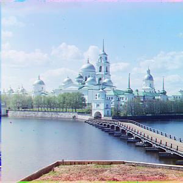
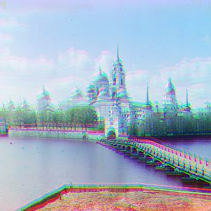
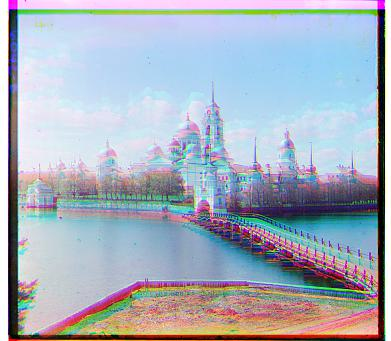
From left to right: cropped L2 norm, cropped NCC, uncropped L2 norm, uncropped NCC. Offset: red: (3, 2), green: (-3, 2)
Tobolsk
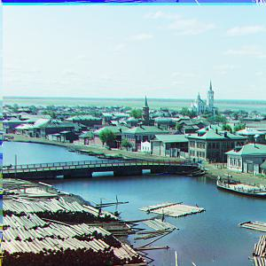
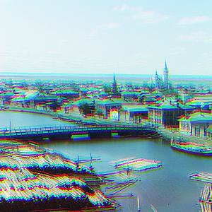

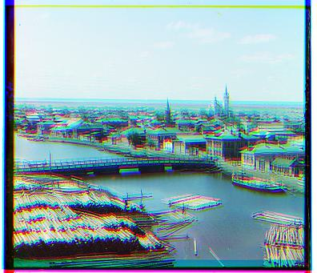
From left to right: cropped L2 norm, cropped NCC, uncropped L2 norm, uncropped NCC. Offset: red: (6, 3), green: (3, 3)
Church
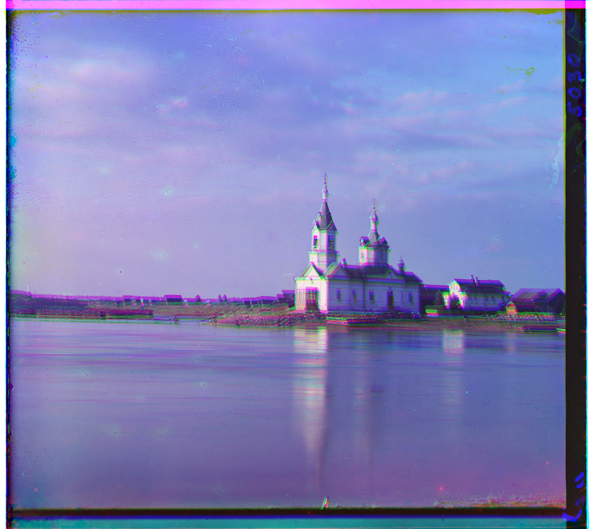
Offset: red: (52, -6), green: (0, -5)
Emir
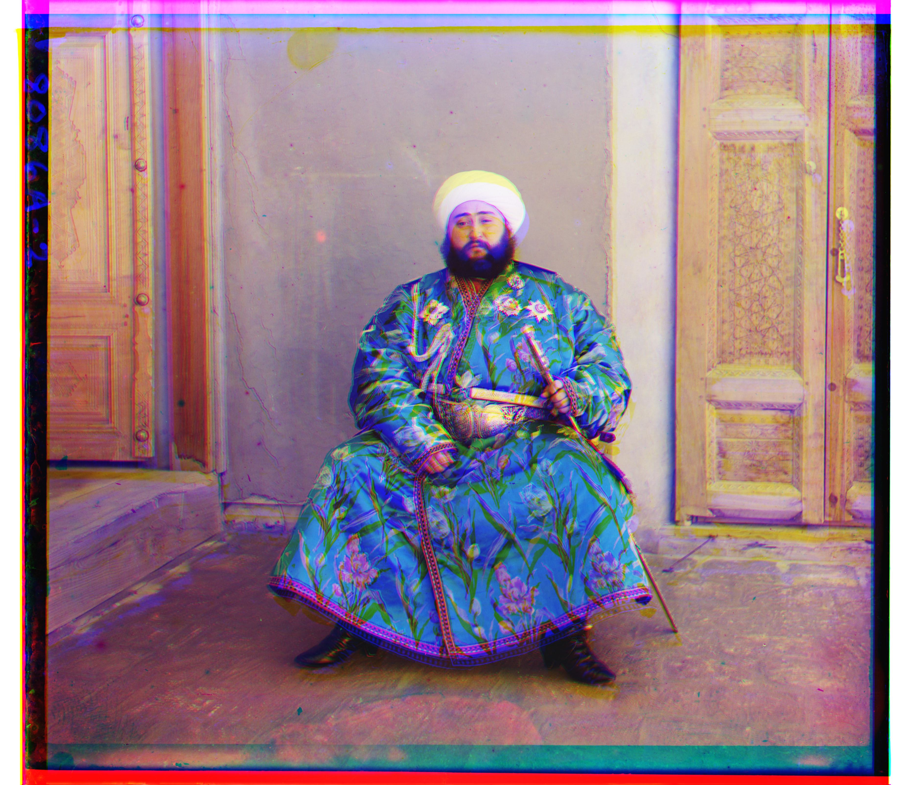
Offset: red: (57, 17), green: (-3, 7)
Harvesters
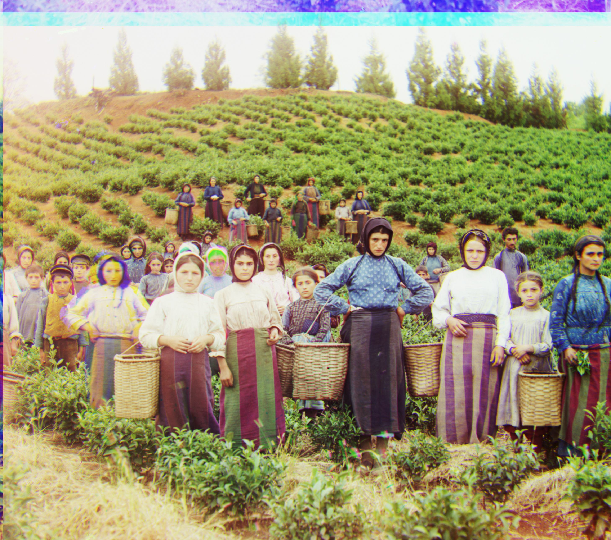
Offset: red: (124, 13), green: (59, 16)
Icon

Offset: red: (52, 21), green: (36, 16)
Lady
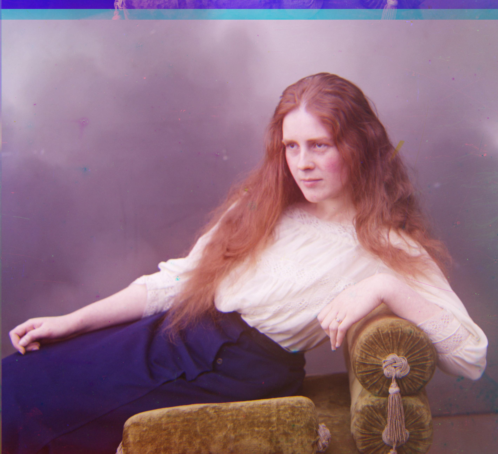
Offset: red: (112, 11), green: (51, 8)
Melons
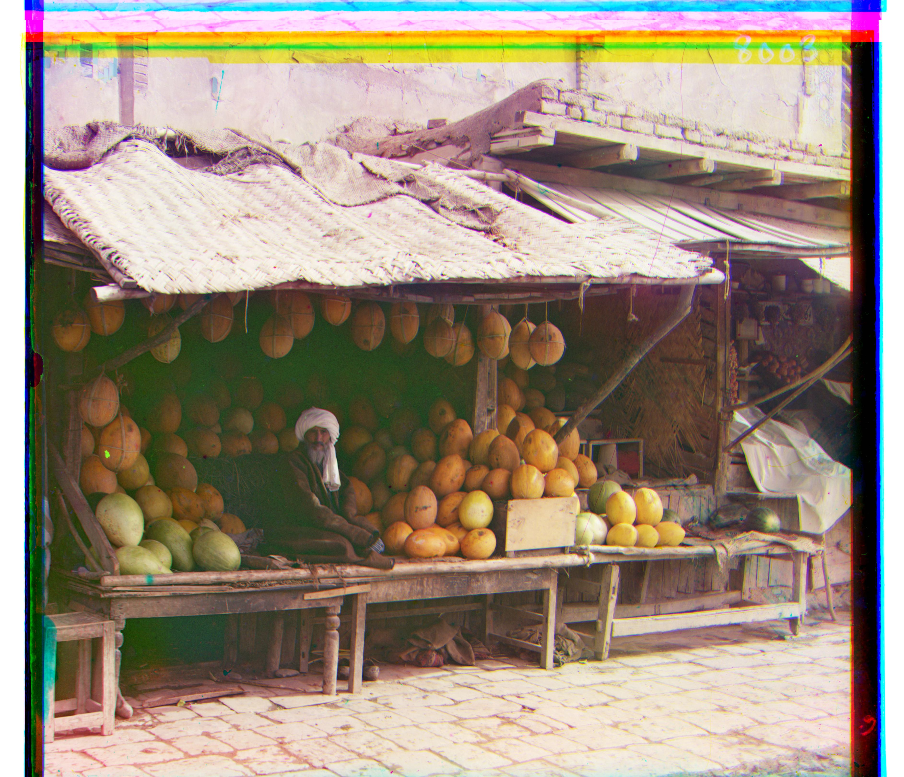
Offset: red: (176, 7), green: (83, 4)
Onion Church
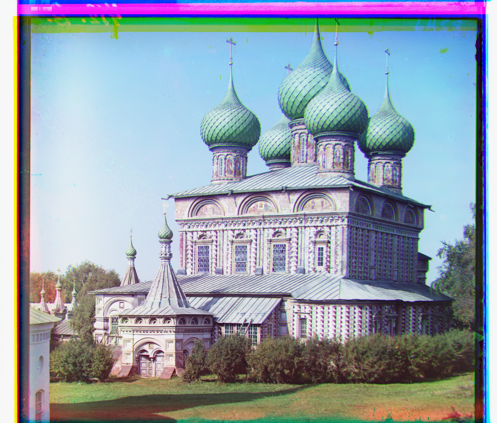
Offset: red: (108, 35), green: (52, 22)
Sculpture
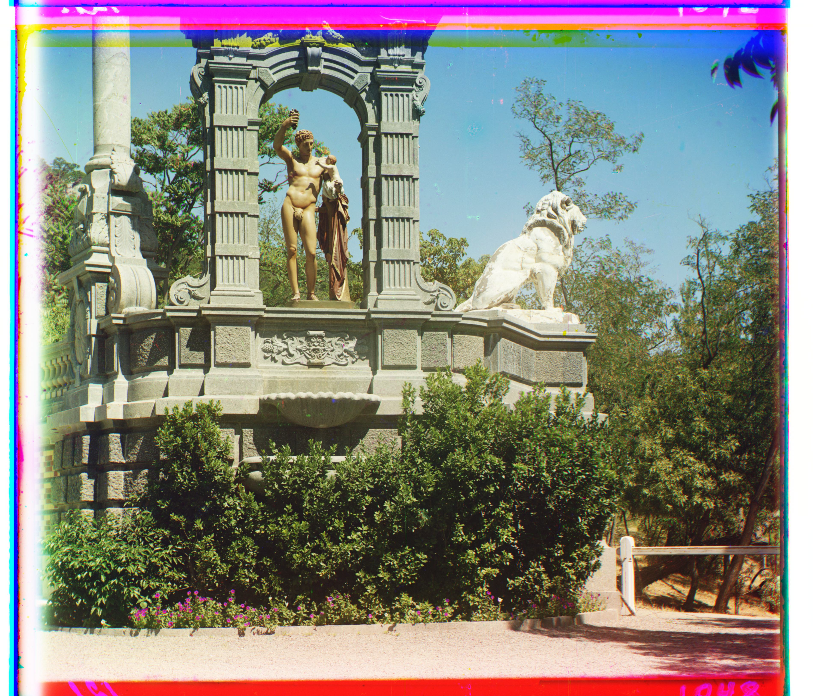
Offset: red: (140, -26), green: (33, -11)
Self Portrait
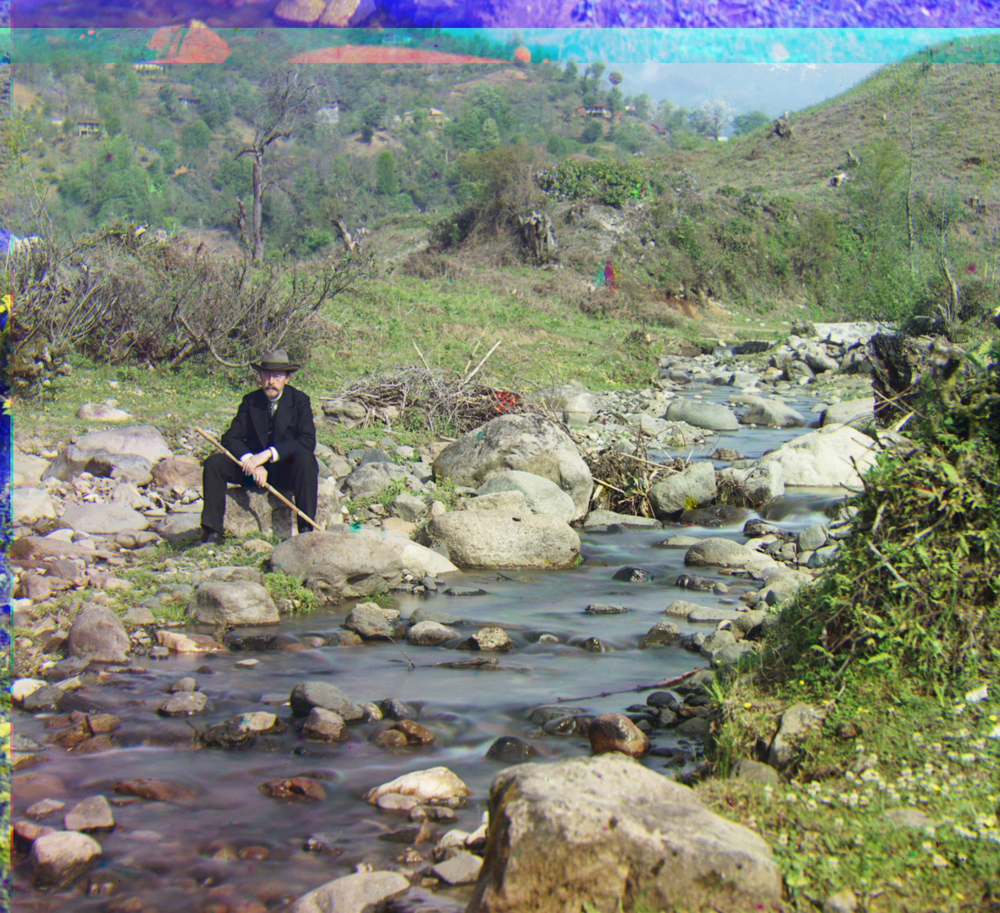
Offset: red: (130, -5), green: (50, -2)
Three Generations
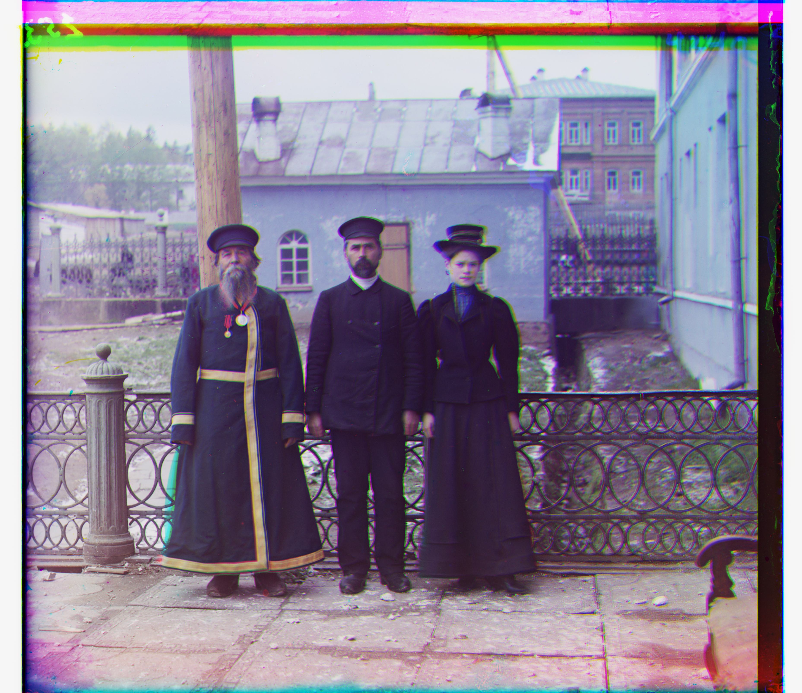
Offset: red: (108, 7), green: (52, 5)
Train
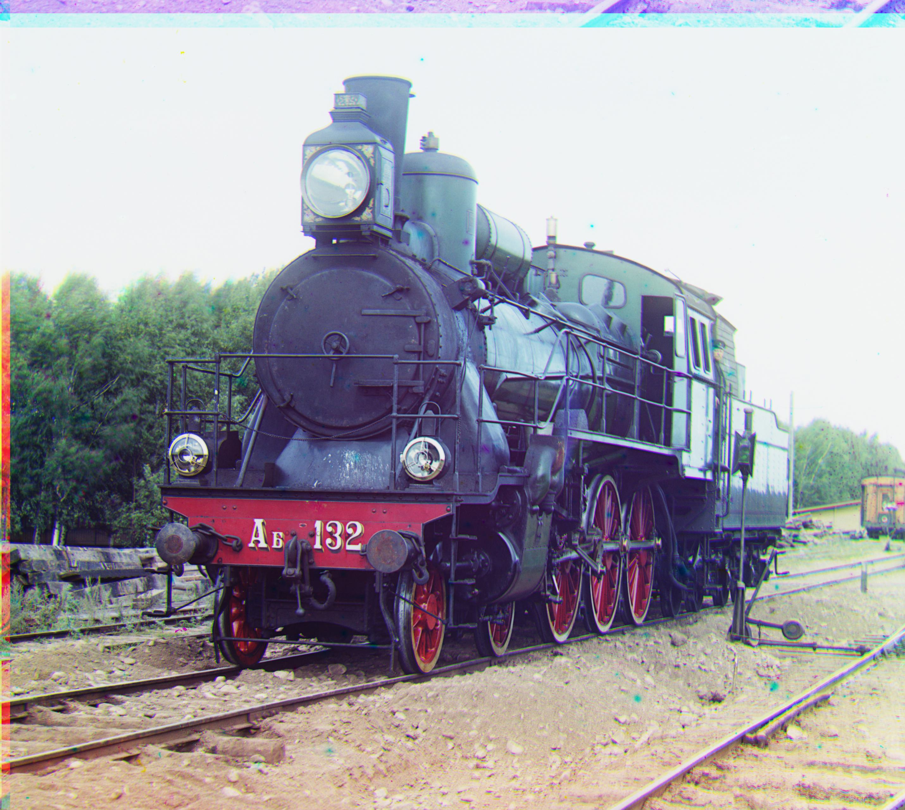
Offset: red: (87, 32), green: (42, 5)